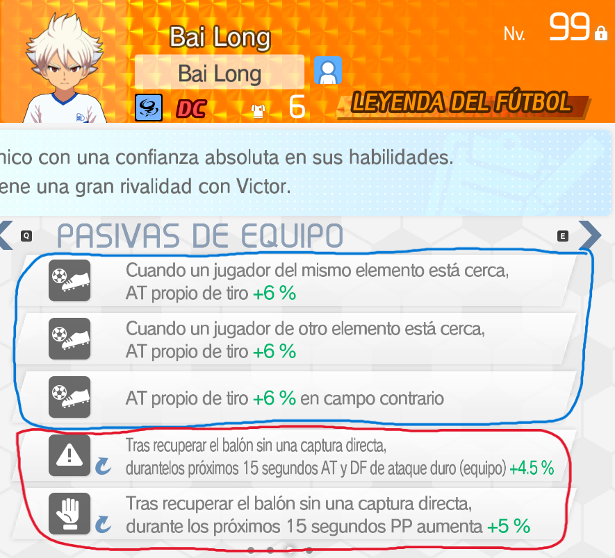
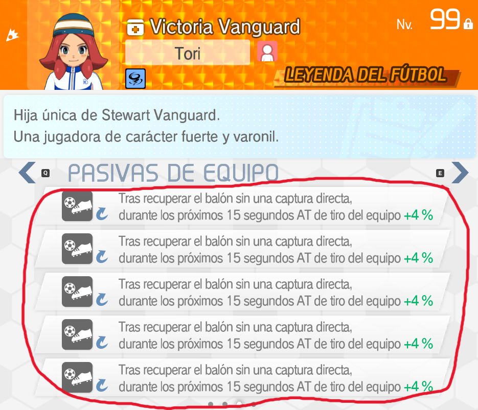
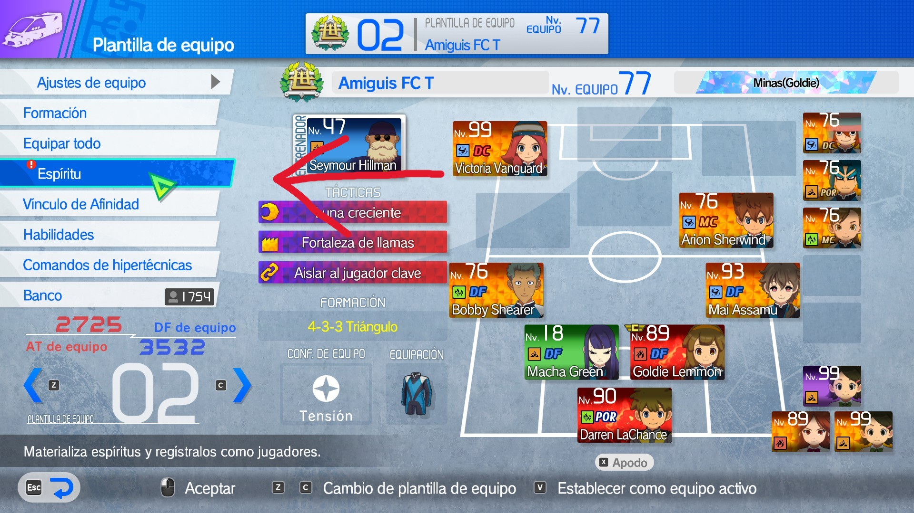
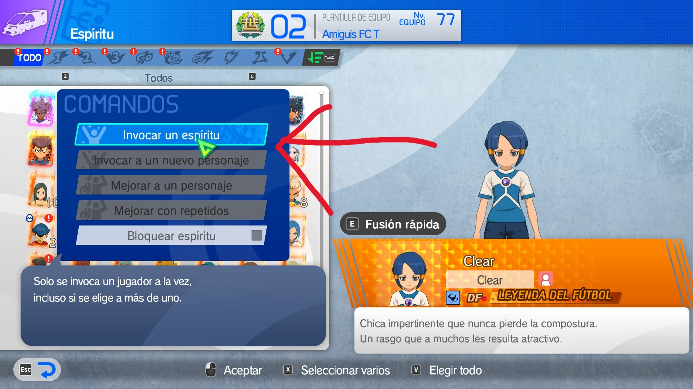
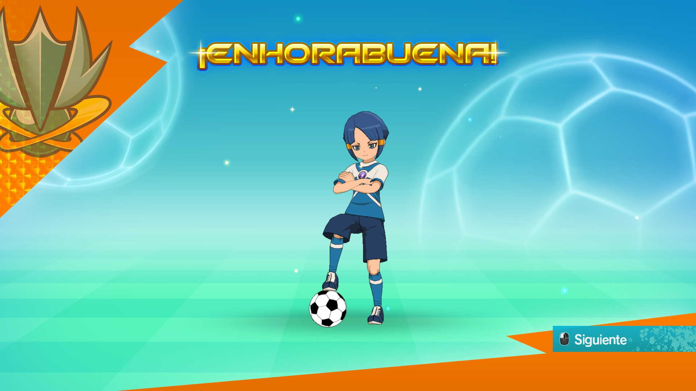
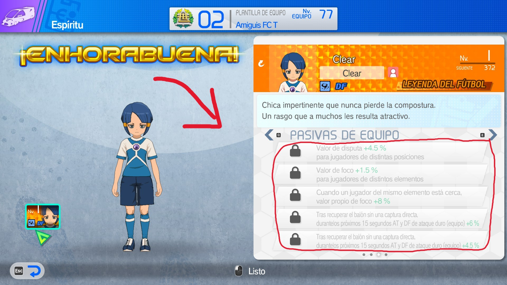
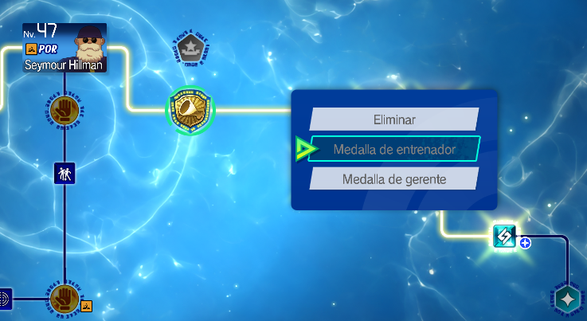
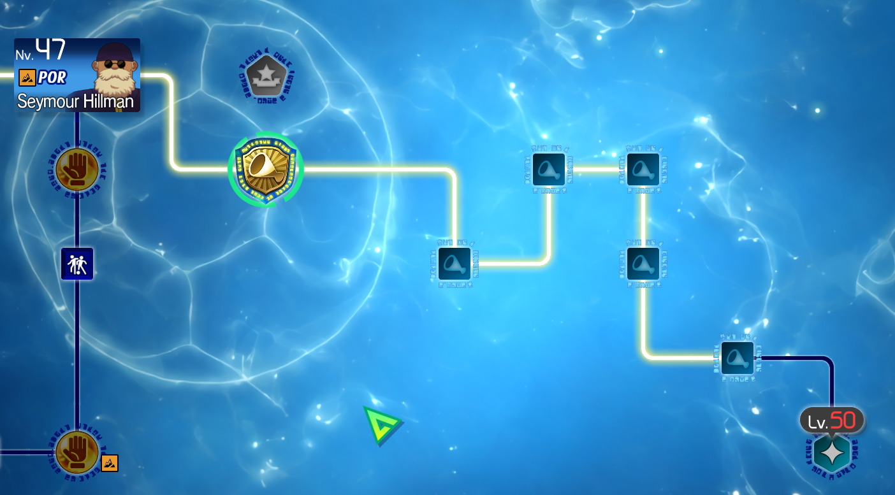
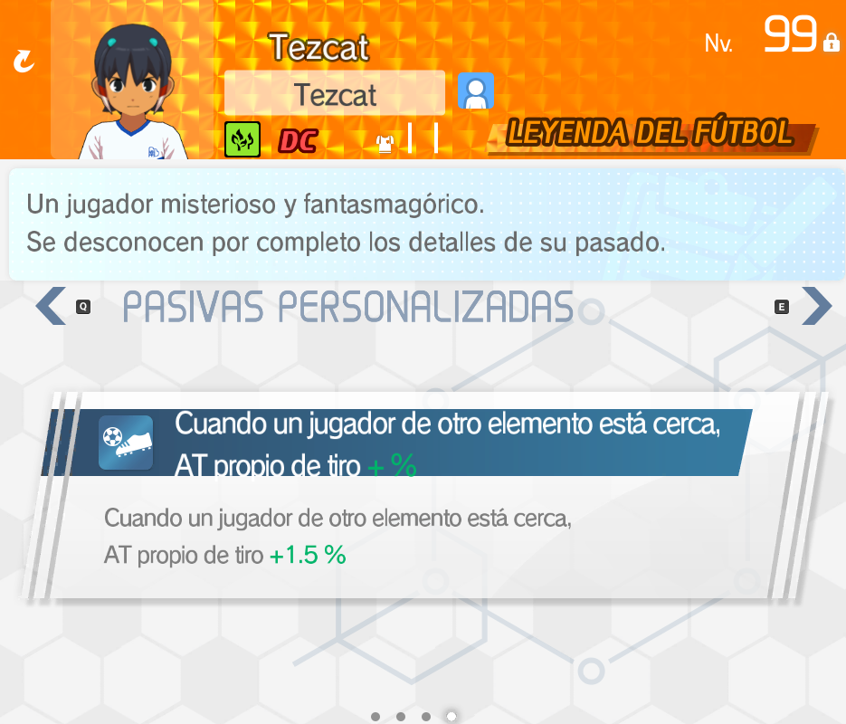

PASIVAS
Las habilidades pasivas son 5 habilidades que tiene el personaje que alteran sus estadísticas y diferentes aspectos cuando se activan. Cada jugador tiene 3 pasivas generales y 2 de arquetipo las cuales se deciden nada más obtienes al jugador. Esto aplica a los entrenadores y gerentes, pero a estos últimos se les pueden modificar las pasivas cosa que después explicaré. Este apartado no debería ser muy difícil de entender si ya tienes la base de las estadísticas y los arquetipos. Aclarar que los ídolos son personajes fijos y este apartado no les afecta
-3 Pasivas gerentes y entrenadores
-1 Conceptos
Cuando obtienes a un jugador, este tiene 5 pasivas asignadas de forma permanente. Estas pasivas incluyen las generales y las de arquetipo. En el caso de las gerentes estas son personalizables.


Las pasivas tienen diferentes efectos y si conoces el funcionamiento de las estadísticas y el juego deberías poder encontrar las pasivas adecuadas para lo que quieras. Creo que una de las cosas más importantes de este juego es la libertad para descubrir e integrar cosas en tu equipo así que me voy a limitar a dar los datos y no a dar las pasivas que deberías usar. Las pasivas aumentan su potencia al subir de rareza y se desbloquean todas al subir al personaje de nivel
-2 Buscar pasivas
Si queremos las mejores pasivas, tenemos que saber como encontrarlas. El método es muy simple, debes obtener espíritus del personaje e ir invocando hasta obtener el personaje con las pasivas que necesites.
Esto es muy sencillo de hacer:
-1 Vamos a plantilla de equipo en el modo crónica
-2 Le damos al equipo
para abrir todas las opciones
-3 Le damos a espíritu
-4 Elegimos el espíritu del personaje que
queremos invocar
-5 Invocamos al personaje
-6 Vemos la pasiva que nos ha tocado




Con esta información ya deberías ser capaz de comenzar a buscar las pasivas que te interesen. Una recomendación, vas a tener que sacar muchas veces a un mismo personaje, no recomiendo retirarlos para que vuelvan a ser espíritus pues igual un personaje de un arquetipo que no te interesaba o algo termina siendo útil en el futuro para algo.
-3 Pasivas gerente y entrenadores
Esta parte es compleja de entender y es justamente la más importante pues las pasivas de gerente y entrenador son las que más marcarán la diferencia en tu equipo. Voy a enseñar paso a paso como crear un gerente/entrenador con pasivas perfectas como la que tengo aquí
Primero de todo, al obtener a un gerente o entrenador tendrá sus pasivas de entrenador/gerente de forma
predetermiada. Necesitamos obtener a estos gerentes/entrenadores para poder trabajar bien con las pasivas.
Ir probando hasta encontrar a un gerente/entrenador con la pasiva de arquetipo que queramos. Una vez lo tengamos, vamos a
añadirlo a un equipo y revisar la tabla de habilidades.
Aquí veremos que su camino va hacia la derecha con una medalla de gerente/entrenador.
Como podemos ver, en la medalla sale que quedan 10 partidos, ahora lo que queremos hacer es jugar 10 partidos con este entrenador/gerente y subirlo a nivel 30. Haciendo esto desbloquearemos la capacidad de cambiarlo de rol y obtendremos todas sus pasivas.
Una vez hayamos completado esto desbloquearemos la capacidad de cambiar de rol al jugador y si le quitamos y le volvemos a poner su medalla de rol, fijaos en lo que pasa con las pasivas


Al haber hecho eso, hemos conseguido las pasivas que el gerente/entrenador tenía y podemos equiparlas libremente a cualquier entrenador/gerente. Eso sí, pasivas de entrenador van en entrenadores y pasivas de gerente van en gerentes.
Con esto el objetivo es maximizar lo que desees de tu equipo. Yo utilizo esto para maximizar la potencia de tiro y gastar el resto en foco pero depende del arquetipo que uses. Recordar que hay un límite de valor máximo en cada pasiva, en el caso del tiro en el arquetipo contraataque es de 100% así que el resto hay que repartirlo en las otras estadísticas. Es un grindeo largo y tedioso de hacer el tema de las pasivas de gerente/entrenador, pero al final del día termina siendo clave para sacar el máximo potencial al equipo.
-4 Pasivas personalizadas
Las pasivas personalizadas no se deben confundir con las pasivas de gerentes/entrenadores, cada jugador tiene un slot para una pasiva personalizada. Estas pasivas no afectan tanto al juego pero sí es importante tenerlas si quieres maximizar la potencia del equipo.

Las pasivas custom se obtienen por medio de los partidos del modo competición. En este modo, puedes enfrentar a los equipos que ya hayas vencido en el modo crónica y en el modo historia y obtener recompensas diferentes a las normales. Dependiendo del partido se obtienen ciertas pasivas, tenéis la información de donde obtenerlas en el siguiente apartado
-5 Excel con pasivas
Primero de todo, créditos a Neklioz (@Neklioz en twitter) ya que él montó un bot con información muy útil y gracias a la gente del discord tienen esta información archivada. Yo NO pretendo adueñarme de su trabajo, si no facilitarlo. El excel está en una versión muy temprana solo contando con la ubicación de las pasivas personalizadas y alguna información de otras, pero espero en el futuro poder tener todas las pasivas con sus detalles ahí. Si hay algún error o algo a mejorar, mi twitter está en el apartado inicio, al pulsar la imagen te lleva a mi cuenta. Revisaré regularmente los MDs en caso de que haya algo de utilidad.